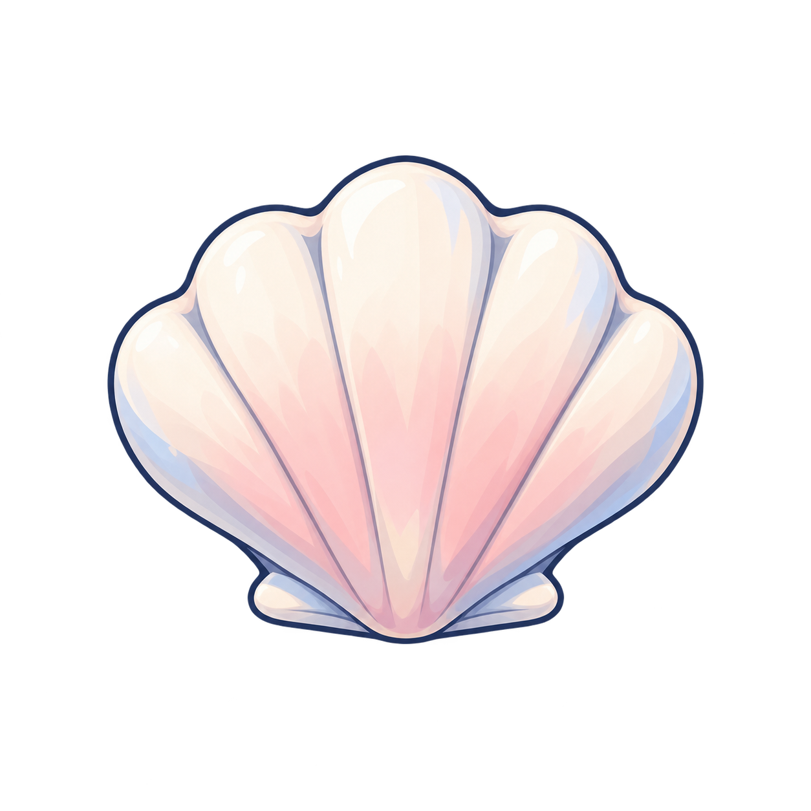

从一件小物，走通一次制作
一枚能放进生活里的贝壳。
需求 → 生成 → 文件检查 → 实际尺寸 → 接入评审。先看得清，再谈拿得稳。
- 01需求卡O03 / B0
- 02透明生成内置 image_gen
- 03原图检查正在读取
- 04尺寸与锚点当前预览
- 05真实接触下一步
CONTEXT CHECK
放在她旁边看看
现有角色仅作风格与尺寸参照
生活区
工作岗位

底部接地点
40 px贝壳可见宽度 · 角色约 180 px
这里验证比例与位置；贝壳未绑定角色手部，未实现拿放或二维移动。
SMALL-SCALE READABILITY
缩小后，还认得出吗？
ONE TARGETED REVISION
只改内部着色，保留两个候选。
第一版偏光亮；第二版尝试更平整的色面。两版均保留原始透明 PNG。轮廓和锚点仍需重新检查。